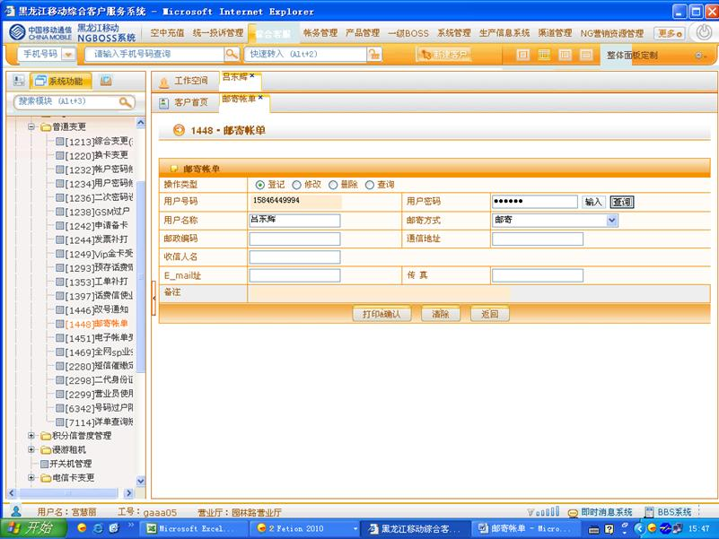
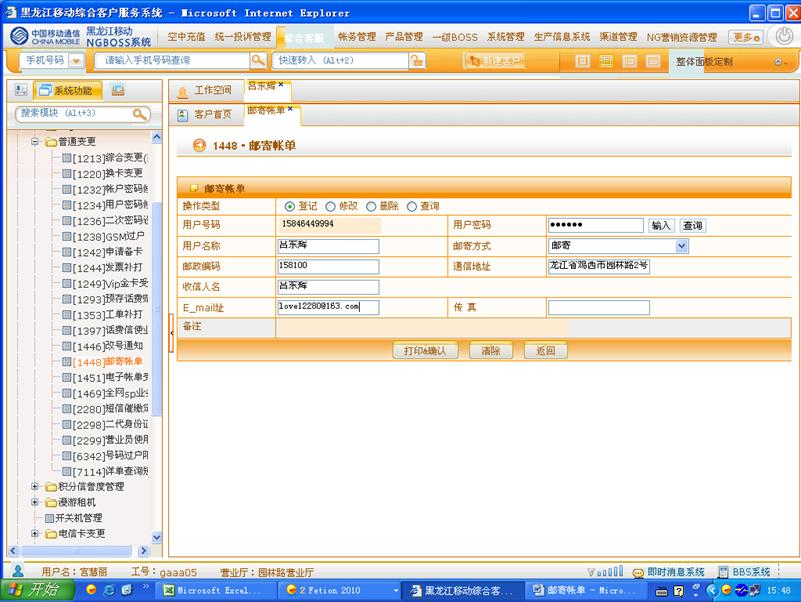
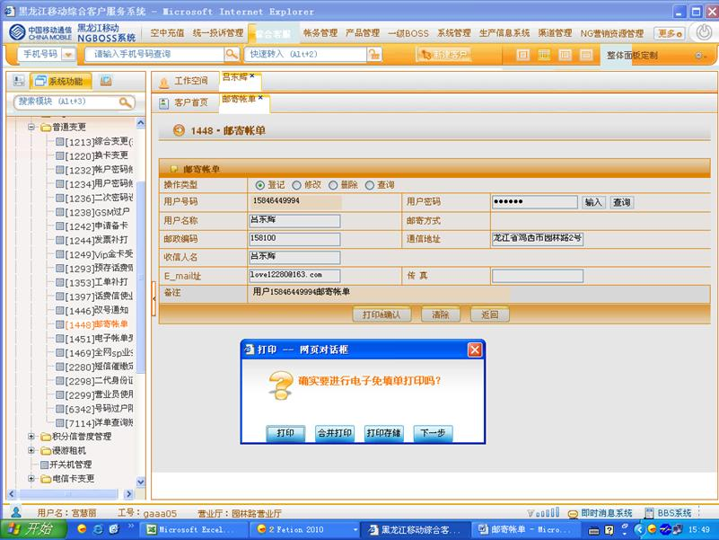

1、进入方式
在“请输入手机号码查询”处输入客户的手机号码，点击查询按钮，点击综合客服-普通变更-邮寄帐单，或在“快速转入”处输入代码1448进入邮寄账单界面
2、界面形式及操作步骤说明
1）进入邮寄账单操作界面，选择要办理的类型选项
l 登记：未办理过邮寄账单的客户进行办理
l 修改：:对邮寄账单相关地址等信息进行修改
l 删除：取消邮寄账单业务
l 查询：查询是否办理过邮寄账单业务，办理过邮寄账单业务的，查询相关登记信息

2）由客户输入服务密码，点击“查询”，然后根据客户需求进行办理
登记：根据客户口述，为客户填写收件地址，填写完成后与客户进行核对
修改：根据客户口述，为客户修改收件地址，修改完成后与客户进行核对
删除：告知客户删除后，将收不到邮寄账单，建议客户办理电子账单
查询：将查询结果告知客户

3）“登记”、“修改”、“删除”业务，需按“打印&确认”。

4）点击“下一步”。
5）点击“确认”提交信息。